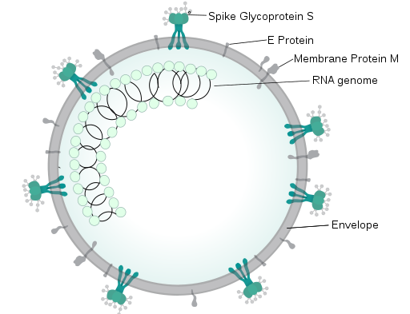
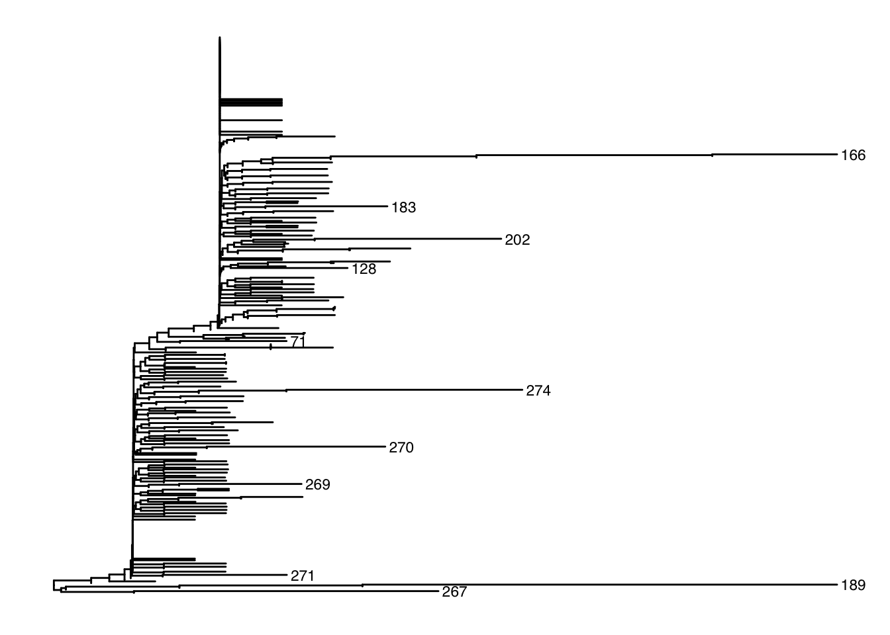
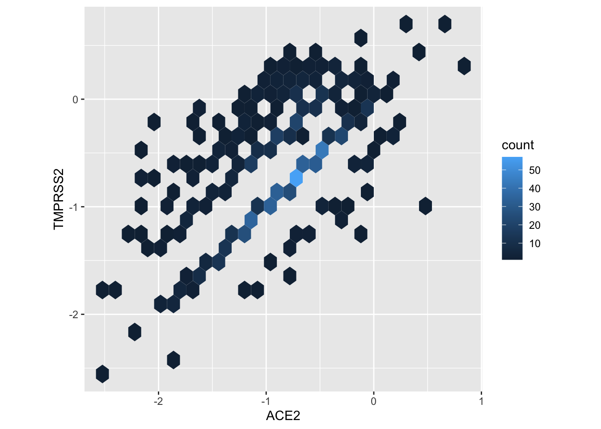

Week 5 Bioinformatics with Bioconductor
5.1 Day 29 (Monday) Zoom check-in
5.1.1 Review and trouble shoot
5.1.2 Bioconductor, packages, and biological data
Repository of more than 1900 packages for the ‘analysis and comprehension of high throughput genomic data’
Bulk and single cell RNASeq; ChIP and other gene regulation, called variants, flow cytometery, proteomics, …
Landing pages & vignettes
Packages
One-time installation of BiocManager
Install Bioconductor or CRAN packages
Validate installation
Types of packages
- Software (e.g., Biostrings, SingleCellExperiment)
- Annotation (e.g., org.Hs.eg.db, TxDb.Hsapiens.UCSC.hg38.knownGene, GO.db)
- Experiment data (e.g., airway, scRNAseq)
Key packages
- Biostrings for representing sequence data
- GenomicRanges for working with genomic coordinates
- SummarizedExperiment and SingleCellExperiment for representing experimental summaries, e.g., a gene x sample matrix of RNA-seq expression values.
‘Class’ and ‘method’
Classes represent data in ways that allow the specialized nature of the data to be exploited, e.g., it makes sense to calculate the
reverseComplement()of a DNA sequence, but not of an arbitrary character vector.library(Biostrings) sequences <- c( chr1 = "CTGACT", chr2 = "CTGGGAACT" ) dna <- DNAStringSet(sequences) dna ## A DNAStringSet instance of length 2 ## width seq names ## [1] 6 CTGACT chr1 ## [2] 9 CTGGGAACT chr2 ## fails! `T` not in the RNA alphabet result <- try( RNAStringSet(sequences) ) ## Error in .Call2("new_XStringSet_from_CHARACTER", class(x0), elementType(x0), : ## key 84 (char 'T') not in lookup tableMethods represent the implementation of common (‘generic’) operations, specialized to the specific classes that the method operates on.
length(dna) ## [1] 2 reverseComplement(dna) ## A DNAStringSet instance of length 2 ## width seq names ## [1] 6 AGTCAG chr1 ## [2] 9 AGTTCCCAG chr2 translate(dna) ## A AAStringSet instance of length 2 ## width seq names ## [1] 2 MT chr1 ## [2] 3 MGT chr2- E.g., one could
translate()both a DNA sequence, and an RNA sequence, so there is bothtranslate,DNAStringSet-methodandtranslate,RNAStringSet-method
- E.g., one could
Not all operations are implemented as methods on a class
E.g.,
length()is a concept shared by collections of DNA and RNA sequences, so the method is defined on a common ‘parent’ classE.g.,
dim()of a two-dimensional object is sufficient to implementnrow()(asdim()[1]) andncol()(asdim()[2]) so one could use a ‘plain old’ functionnrow <- function(x) dim(x)[1]fornrow()/ncol(), relying on adim()generic and methods to provide specialized behavior.
Getting help
- Vignettes, e.g., DESeq2 vignette!
browseVignettes(package = "DESeq2") - Help pages for classes, e.g.,
?DNAStringSet,?GRanges Discovering methods
Looking at symbols made available by packages (after the package is attached to the
search()path):ls("package:GenomicRanges")
5.1.3 This week: SARS-CoV-2 sequence and human tissue-specific gene expression data
Biological background
RNA virus (source, license: CC BY-SA 4.0)

Key domains (source, license: CC BY 2)

{kind=link}
{kind=link}
Setup
Some essential Bioconductor data structures
Additional software
Need to install software?
Install BiocManager
Install other CRAN or Bioconductor packges
Biostrings: representing DNA sequences
GenomicRanges: annotations in genome space, e.g., create a variable representing ‘regions of interest’
regions_of_interest <- c( "chr1:1-3", "chr1:3-6", "chr2:4-6" ) roi <- GRanges(regions_of_interest) roi ## GRanges object with 3 ranges and 0 metadata columns: ## seqnames ranges strand ## <Rle> <IRanges> <Rle> ## [1] chr1 1-3 * ## [2] chr1 3-6 * ## [3] chr2 4-6 * ## ------- ## seqinfo: 2 sequences from an unspecified genome; no seqlengthsMany fun operations, e.g., extract sequences of regions of interest
Sequences and annotations
Input FASTA files from New York State samples (it makes little biological sense to use just New York samples, but we’ll do it anyway!) to
DNAStringSetWork the Genbank accession of the reference sequence
- DNA sequence
- Coding sequence annotations
- Coding sequences
Alignment and visualization
Gene expression
- Retrieving example data from ExperimentHub
- Annotating cell types
5.2 Day 30 DNA sequences and annotations
5.2.1 Setup
Set up a directory for working
Make sure the following packages are installed
Install necessary packages, if needed
5.2.2 Representing DNA sequences
Sample information
Visit the NCBI SARS-CoV-2 site for orientation. We’ll retrieve and analyse some of the samples sequenced in New York state
Read a csv file summarizing records available from the US NCBI.
url <- "https://raw.githubusercontent.com/mtmorgan/QuaRantine/master/assets/05-genbank-accessions.csv" csv_file <- file.path(workdir, basename(url)) if ( !file.exists(csv_file) ) download.file(url, csv_file) records <- readr::read_csv(csv_file) ## Parsed with column specification: ## cols( ## accession = col_character(), ## link = col_character(), ## date = col_date(format = ""), ## country = col_character(), ## region = col_character() ## ) records ## # A tibble: 2,434 x 5 ## accession link date country region ## <chr> <chr> <date> <chr> <chr> ## 1 NC_045512 https://www.ncbi.nlm.nih.gov/nuccore/N… NA China <NA> ## 2 MT447189 https://www.ncbi.nlm.nih.gov/nuccore/M… 2020-03-02 Uzbekist… <NA> ## 3 MT447188 https://www.ncbi.nlm.nih.gov/nuccore/M… 2020-03-02 Uzbekist… <NA> ## 4 MT447177 https://www.ncbi.nlm.nih.gov/nuccore/M… 2020-03-26 Iran <NA> ## 5 MT447176 https://www.ncbi.nlm.nih.gov/nuccore/M… 2020-03-20 Thailand <NA> ## 6 MT447175 https://www.ncbi.nlm.nih.gov/nuccore/M… 2020-03-19 Thailand <NA> ## 7 MT447174 https://www.ncbi.nlm.nih.gov/nuccore/M… 2020-03-01 Thailand <NA> ## 8 MT447173 https://www.ncbi.nlm.nih.gov/nuccore/M… 2020-03-18 Thailand <NA> ## 9 MT447172 https://www.ncbi.nlm.nih.gov/nuccore/M… 2020-03-18 Thailand <NA> ## 10 MT447171 https://www.ncbi.nlm.nih.gov/nuccore/M… 2020-03-16 Thailand <NA> ## # … with 2,424 more rows
FASTA sequence files
Download a FASTA file containing DNA sequences of all samples sequenced in New York State (this doesn’t make much sense biologically!)
This is a plain text file with a simple format. Each DNA sequence is on a line starting with an identifier,
>MT..., and then lines representing the DNA (or RNA or amino acid) sequence.readLines(fasta_file, 5) ## [1] ">MT434817" ## [2] "ATTAAAGGTTTATACCTTCCCAGGTAACAAACCAACCAACTTTCGATCTCTTGTAGATCTGTTCTCTAAACGAACTTTAA" ## [3] "AATCTGTGTGGCTGTCACTCGGCTGCATGCTTAGTGCACTCACGCAGTATAATTAATAACTAATTACTGTCGTTGACAGG" ## [4] "ACACGAGTAACTCGTCTATCTTCTGCAGGCTGCTTACGGTTTCGTCCGTGTTGCAGCCGATCATCAGCACATCTAGGTTT" ## [5] "TGTCCGGGTGTGACCGAAAGGTAAGATGGAGAGCCTTGTCCCTGGTTTCAACGAGAAAACACACGTCCAACTCAGTTTGC"Load the Biostrings package
Read the DNA sequences and explore basic properties
dna <- readDNAStringSet(fasta_file) dna ## A DNAStringSet instance of length 245 ## width seq names ## [1] 29873 ATTAAAGGTTTATACCTTCCCA...GGAGAATGACAAAAAAAAAAAA MT434817 ## [2] 29879 ATTAAAGGTTTATACCTTCCCA...GGAGAATGACAAAAAAAAAAAA MT434816 ## [3] 29873 ATTAAAGGTTTATACCTTCCCA...GGAGAATGACAAAAAAAAAAAA MT434815 ## [4] 29882 ATTAAAGGTTTATACCTTCCCA...GGAGAATGACAAAAAAAAAAAA MT434814 ## [5] 29882 ATTAAAGGTTTATACCTTCCCA...GGAGAATGACAAAAAAAAAAAA MT434813 ## ... ... ... ## [241] 29724 GATCTGTTCTCTAAACGAACTT...TGTACAGTGAACAATGCTAGGG MT370833 ## [242] 29717 TCTAAACGAACTTTAAAATCTG...TACAGTGAACAATGCTAGGGAG MT370832 ## [243] 29716 TCTAAACGAACTTTAAAATCTG...GTACAGTGAACAATGCTAGGGA MT370831 ## [244] 29882 ATTAAAGGTTTATACCTTCCCA...GGAGAATGACAAAAAAAAAAAA MT325627 ## [245] 29882 ATTAAAGGTTTATACCTTCCCA...GGAGAATGACAAAAAAAAAAAA MT304486Perform simple manipulations
## how many records? length(dna) ## [1] 245 ## subset dna[1:3] ## A DNAStringSet instance of length 3 ## width seq names ## [1] 29873 ATTAAAGGTTTATACCTTCCCAG...AGGAGAATGACAAAAAAAAAAAA MT434817 ## [2] 29879 ATTAAAGGTTTATACCTTCCCAG...AGGAGAATGACAAAAAAAAAAAA MT434816 ## [3] 29873 ATTAAAGGTTTATACCTTCCCAG...AGGAGAATGACAAAAAAAAAAAA MT434815 dna[c('MT434817', 'MT434815')] ## A DNAStringSet instance of length 2 ## width seq names ## [1] 29873 ATTAAAGGTTTATACCTTCCCAG...AGGAGAATGACAAAAAAAAAAAA MT434817 ## [2] 29873 ATTAAAGGTTTATACCTTCCCAG...AGGAGAATGACAAAAAAAAAAAA MT434815 ## extract dna[[1]] ## 29873-letter "DNAString" instance ## seq: ATTAAAGGTTTATACCTTCCCAGGTAACAAACCAAC...TTAATAGCTTCTTAGGAGAATGACAAAAAAAAAAAA ## number of characters in each record head(nchar(dna)) ## [1] 29873 29879 29873 29882 29882 29882 hist(nchar(dna)) # histogram of sequence lengths
5.2.3 Working with GenBankRecord objects
Data is often represented in complicated formats that do not fit into the tidy ‘table’ format of a CSV file. An example is the information displayed on the SARS-CoV-2 reference genome web page.
Often ‘someone’ has written software to manipulate this data in a more convient way.
Attach the rentrez package, which provides a way to query the NCBI’s ‘Entrez’ collection of data bases. Use
BiocManager::install('rentrez')if you need to install the packagelibrary(rentrez) ## who's responsible? maintainer("rentrez") ## [1] "David Winter <david.winter@gmail.com>" ## how to cite? citation("rentrez") ## ## To cite rentrez in publications use: ## ## Winter, D. J. (2017) rentrez: an R package for the NCBI eUtils API ## The R Journal 9(2):520-526 ## ## A BibTeX entry for LaTeX users is ## ## @Article{, ## title = {{rentrez}: an R package for the NCBI eUtils API}, ## author = {David J. Winter}, ## journal = {The R Journal}, ## year = {2017}, ## volume = {9}, ## issue = {2}, ## pages = {520--526}, ## }The accession number for the SARS-CoV-2 reference sequence is
NC_045512. Useentrez_search()to search the NCBI ‘nuccore’ database to discover information about this accession.The
idis an identifier that can be used to actually retrieve the genbank recordThe record contains all the text in the record; if you like visualize it with
Represent the data as GenBankR object
Rather than try to ‘munge’ (e.g., copy and paste) relevant information from the GenBank record into R, use the genbankr package. Again, install with
BiocManager::install("genbankr")if necessarylibrary(genbankr) maintainer("genbankr") ## [1] "Gabriel Becker <becker.gabriel@gene.com>" citation("genbankr") ## ## To cite package 'genbankr' in publications use: ## ## Gabriel Becker and Michael Lawrence (2019). genbankr: Parsing GenBank ## files into semantically useful objects. R package version 1.14.0. ## ## A BibTeX entry for LaTeX users is ## ## @Manual{, ## title = {genbankr: Parsing GenBank files into semantically useful objects}, ## author = {Gabriel Becker and Michael Lawrence}, ## year = {2019}, ## note = {R package version 1.14.0}, ## }Use the function
readGenBank()to parse the complicated text ofgb_recordgb <- readGenBank(text = gb_record) gb ## GenBank Annotations ## Severe acute respiratory syndrome coronavirus 2 isolate Wuhan-Hu-1, complete genome. ## Accession: NC_045512 ## 1 Sequence(s) with total length length: 29903 ## 11 genes ## 12 transcripts ## 13 exons/cds elements ## 0 variations ## 34 other featuresExtract the reference sequence from the object
Extract the coding sequences from the reference sequence; the
cds()command is explained a little later.cds <- getSeq(ref, cds(gb)) cds ## A DNAStringSet instance of length 13 ## width seq ## [1] 13203 ATGGAGAGCCTTGTCCCTGGTTTCAACGAGAAA...CTTCAGTCAGCTGATGCACAATCGTTTTTAAAC ## [2] 8088 CGGGTTTGCGGTGTAAGTGCAGCCCGTCTTACA...GTTATTTCTAGTGATGTTCTTGTTAACAACTAA ## [3] 13218 ATGGAGAGCCTTGTCCCTGGTTTCAACGAGAAA...GCACAATCGTTTTTAAACGGGTTTGCGGTGTAA ## [4] 3822 ATGTTTGTTTTTCTTGTTTTATTGCCACTAGTC...GTGCTCAAAGGAGTCAAATTACATTACACATAA ## [5] 828 ATGGATTTGTTTATGAGAATCTTCACAATTGGA...GAACCGACGACGACTACTAGCGTGCCTTTGTAA ## ... ... ... ## [9] 366 ATGAAAATTATTCTTTTCTTGGCACTGATAACA...CTTTGCTTCACACTCAAAAGAAAGACAGAATGA ## [10] 132 ATGATTGAACTTTCATTAATTGACTTCTATTTG...CTGCAAGATCATAATGAAACTTGTCACGCCTAA ## [11] 366 ATGAAATTTCTTGTTTTCTTAGGAATCATCACA...CATGACGTTCGTGTTGTTTTAGATTTCATCTAA ## [12] 1260 ATGTCTGATAATGGACCCCAAAATCAGCGAAAT...TCCATGAGCAGTGCTGACTCAACTCAGGCCTAA ## [13] 117 ATGGGCTATATAAACGTTTTCGCTTTTCCGTTT...CAAGTAGATGTAGTTAACTTTAATCTCACATAGThere are 13 coding sequences in the genome. Translate these to their amino acid sequences
translate(cds) ## A AAStringSet instance of length 13 ## width seq ## [1] 4401 MESLVPGFNEKTHVQLSLPVLQVRDVLVRGFGD...VCTVCGMWKGYGCSCDQLREPMLQSADAQSFLN ## [2] 2696 RVCGVSAARLTPCGTGTSTDVVYRAFDIYNDKV...INDMILSLLSKGRLIIRENNRVVISSDVLVNN* ## [3] 4406 MESLVPGFNEKTHVQLSLPVLQVRDVLVRGFGD...GMWKGYGCSCDQLREPMLQSADAQSFLNGFAV* ## [4] 1274 MFVFLVLLPLVSSQCVNLTTRTQLPPAYTNSFT...SCLKGCCSCGSCCKFDEDDSEPVLKGVKLHYT* ## [5] 276 MDLFMRIFTIGTVTLKQGEIKDATPSDFVRATA...VQIHTIDGSSGVVNPVMEPIYDEPTTTTSVPL* ## ... ... ... ## [9] 122 MKIILFLALITLATCELYHYQECVRGTTVLLKE...QEEVQELYSPIFLIVAAIVFITLCFTLKRKTE* ## [10] 44 MIELSLIDFYLCFLAFLLFLVLIMLIIFWFSLELQDHNETCHA* ## [11] 122 MKFLVFLGIITTVAAFHQECSLQSCTQHQPYVV...CQEPKLGSLVVRCSFYEDFLEYHDVRVVLDFI* ## [12] 420 MSDNGPQNQRNAPRITFGGPSDSTGSNQNGERS...KQQTVTLLPAADLDDFSKQLQQSMSSADSTQA* ## [13] 39 MGYINVFAFPFTIYSLLLCRMNSRNYIAQVDVVNFNLT*
5.2.4 Genomic ranges and DNA sequences
Genomic ranges
Attach the GenomicRanges package. If necessary, install with
BiocManager::install("GenomicRanges")Extract the coordinates of the coding sequences contained in the GenBank accession
Look at the genomic ranges defined in
cdsgranges(cds) ## GRanges object with 13 ranges and 0 metadata columns: ## seqnames ranges strand ## <Rle> <IRanges> <Rle> ## [1] Severe acute respiratory syndrome coronavirus2 266-13468 + ## [2] Severe acute respiratory syndrome coronavirus2 13468-21555 + ## [3] Severe acute respiratory syndrome coronavirus2 266-13483 + ## [4] Severe acute respiratory syndrome coronavirus2 21563-25384 + ## [5] Severe acute respiratory syndrome coronavirus2 25393-26220 + ## ... ... ... ... ## [9] Severe acute respiratory syndrome coronavirus2 27394-27759 + ## [10] Severe acute respiratory syndrome coronavirus2 27756-27887 + ## [11] Severe acute respiratory syndrome coronavirus2 27894-28259 + ## [12] Severe acute respiratory syndrome coronavirus2 28274-29533 + ## [13] Severe acute respiratory syndrome coronavirus2 29558-29674 + ## ------- ## seqinfo: 1 sequence from NC_045512.2 genomeThere are 13 coding sequences in the reference genome. The sequence is named ‘Severe acute respiratory syndrome coronavirus2’. The first region starts at position 266 of the reference genome, and goes to position 13468. The coding sequence is on the ‘+’ strand.
The full
cdsobject has additional detail about each coding sequence. Display the full object (the display ‘wraps’ around several linescds ## GRanges object with 13 ranges and 14 metadata columns: ## seqnames ranges strand | ## <Rle> <IRanges> <Rle> | ## [1] Severe acute respiratory syndrome coronavirus2 266-13468 + | ## [2] Severe acute respiratory syndrome coronavirus2 13468-21555 + | ## [3] Severe acute respiratory syndrome coronavirus2 266-13483 + | ## [4] Severe acute respiratory syndrome coronavirus2 21563-25384 + | ## [5] Severe acute respiratory syndrome coronavirus2 25393-26220 + | ## ... ... ... ... . ## [9] Severe acute respiratory syndrome coronavirus2 27394-27759 + | ## [10] Severe acute respiratory syndrome coronavirus2 27756-27887 + | ## [11] Severe acute respiratory syndrome coronavirus2 27894-28259 + | ## [12] Severe acute respiratory syndrome coronavirus2 28274-29533 + | ## [13] Severe acute respiratory syndrome coronavirus2 29558-29674 + | ## type gene locus_tag ribosomal_slippage ## <character> <character> <character> <logical> ## [1] CDS ORF1ab GU280_gp01 TRUE ## [2] CDS ORF1ab GU280_gp01 TRUE ## [3] CDS ORF1ab GU280_gp01 FALSE ## [4] CDS S GU280_gp02 FALSE ## [5] CDS ORF3a GU280_gp03 FALSE ## ... ... ... ... ... ## [9] CDS ORF7a GU280_gp07 FALSE ## [10] CDS ORF7b GU280_gp08 FALSE ## [11] CDS ORF8 GU280_gp09 FALSE ## [12] CDS N GU280_gp10 FALSE ## [13] CDS ORF10 GU280_gp11 FALSE ## note codon_start ## <character> <numeric> ## [1] pp1ab; translated by -1 ribosomal frameshift 1 ## [2] pp1ab; translated by -1 ribosomal frameshift 1 ## [3] pp1a 1 ## [4] structural protein; spike protein 1 ## [5] <NA> 1 ## ... ... ... ## [9] <NA> 1 ## [10] <NA> 1 ## [11] <NA> 1 ## [12] ORF9; structural protein 1 ## [13] <NA> 1 ## product protein_id db_xref translation ## <character> <character> <CharacterList> <AAStringSet> ## [1] ORF1ab polyprotein YP_009724389.1 GeneID:43740578 MES...VNN ## [2] ORF1ab polyprotein YP_009724389.1 GeneID:43740578 MES...VNN ## [3] ORF1a polyprotein YP_009725295.1 GeneID:43740578 MES...FAV ## [4] surface glycoprotein YP_009724390.1 GeneID:43740568 MFV...HYT ## [5] ORF3a protein YP_009724391.1 GeneID:43740569 MDL...VPL ## ... ... ... ... ... ## [9] ORF7a protein YP_009724395.1 GeneID:43740573 MKI...KTE ## [10] ORF7b YP_009725318.1 GeneID:43740574 MIE...CHA ## [11] ORF8 protein YP_009724396.1 GeneID:43740577 MKF...DFI ## [12] nucleocapsid phosphoprotein YP_009724397.2 GeneID:43740575 MSD...TQA ## [13] ORF10 protein YP_009725255.1 GeneID:43740576 MGY...NLT ## loctype gene_synonym gene_id transcript_id ## <character> <CharacterList> <character> <character> ## [1] normal NA GU280_gp01 GU280_gp01.1 ## [2] normal NA GU280_gp01 GU280_gp01.1 ## [3] normal NA GU280_gp01 GU280_gp01.2 ## [4] normal spike glycoprotein GU280_gp02 GU280_gp02.1 ## [5] normal NA GU280_gp03 GU280_gp03.1 ## ... ... ... ... ... ## [9] normal NA GU280_gp07 GU280_gp07.1 ## [10] normal NA GU280_gp08 GU280_gp08.1 ## [11] normal NA GU280_gp09 GU280_gp09.1 ## [12] normal NA GU280_gp10 GU280_gp10.1 ## [13] normal NA GU280_gp11 GU280_gp11.1 ## ------- ## seqinfo: 1 sequence from NC_045512.2 genomeor coerce to a tibble and explore
library(tibble) library(dplyr) ## ## Attaching package: 'dplyr' ## The following objects are masked from 'package:GenomicRanges': ## ## intersect, setdiff, union ## The following object is masked from 'package:GenomeInfoDb': ## ## intersect ## The following objects are masked from 'package:Biostrings': ## ## collapse, intersect, setdiff, setequal, union ## The following object is masked from 'package:XVector': ## ## slice ## The following objects are masked from 'package:IRanges': ## ## collapse, desc, intersect, setdiff, slice, union ## The following objects are masked from 'package:S4Vectors': ## ## first, intersect, rename, setdiff, setequal, union ## The following objects are masked from 'package:BiocGenerics': ## ## combine, intersect, setdiff, union ## The following objects are masked from 'package:stats': ## ## filter, lag ## The following objects are masked from 'package:base': ## ## intersect, setdiff, setequal, union as_tibble(cds) ## # A tibble: 13 x 19 ## seqnames start end width strand type gene locus_tag ribosomal_slipp… ## <fct> <int> <int> <int> <fct> <chr> <chr> <chr> <lgl> ## 1 Severe … 266 13468 13203 + CDS ORF1… GU280_gp… TRUE ## 2 Severe … 13468 21555 8088 + CDS ORF1… GU280_gp… TRUE ## 3 Severe … 266 13483 13218 + CDS ORF1… GU280_gp… FALSE ## 4 Severe … 21563 25384 3822 + CDS S GU280_gp… FALSE ## 5 Severe … 25393 26220 828 + CDS ORF3a GU280_gp… FALSE ## 6 Severe … 26245 26472 228 + CDS E GU280_gp… FALSE ## 7 Severe … 26523 27191 669 + CDS M GU280_gp… FALSE ## 8 Severe … 27202 27387 186 + CDS ORF6 GU280_gp… FALSE ## 9 Severe … 27394 27759 366 + CDS ORF7a GU280_gp… FALSE ## 10 Severe … 27756 27887 132 + CDS ORF7b GU280_gp… FALSE ## 11 Severe … 27894 28259 366 + CDS ORF8 GU280_gp… FALSE ## 12 Severe … 28274 29533 1260 + CDS N GU280_gp… FALSE ## 13 Severe … 29558 29674 117 + CDS ORF10 GU280_gp… FALSE ## # … with 10 more variables: note <chr>, codon_start <dbl>, product <chr>, ## # protein_id <chr>, db_xref <I<list>>, translation <chr>, loctype <chr>, ## # gene_synonym <I<list>>, gene_id <chr>, transcript_id <chr>For instance, we can find the gene associated with each coding sequence, using the following equivalent commands
cds$gene ## [1] "ORF1ab" "ORF1ab" "ORF1ab" "S" "ORF3a" "E" "M" "ORF6" ## [9] "ORF7a" "ORF7b" "ORF8" "N" "ORF10" subset(cds, , gene) ## GRanges object with 13 ranges and 1 metadata column: ## seqnames ranges strand | ## <Rle> <IRanges> <Rle> | ## [1] Severe acute respiratory syndrome coronavirus2 266-13468 + | ## [2] Severe acute respiratory syndrome coronavirus2 13468-21555 + | ## [3] Severe acute respiratory syndrome coronavirus2 266-13483 + | ## [4] Severe acute respiratory syndrome coronavirus2 21563-25384 + | ## [5] Severe acute respiratory syndrome coronavirus2 25393-26220 + | ## ... ... ... ... . ## [9] Severe acute respiratory syndrome coronavirus2 27394-27759 + | ## [10] Severe acute respiratory syndrome coronavirus2 27756-27887 + | ## [11] Severe acute respiratory syndrome coronavirus2 27894-28259 + | ## [12] Severe acute respiratory syndrome coronavirus2 28274-29533 + | ## [13] Severe acute respiratory syndrome coronavirus2 29558-29674 + | ## gene ## <character> ## [1] ORF1ab ## [2] ORF1ab ## [3] ORF1ab ## [4] S ## [5] ORF3a ## ... ... ## [9] ORF7a ## [10] ORF7b ## [11] ORF8 ## [12] N ## [13] ORF10 ## ------- ## seqinfo: 1 sequence from NC_045512.2 genome as_tibble(cds) %>% ## info on gene and protein product dplyr::select(gene, product) ## # A tibble: 13 x 2 ## gene product ## <chr> <chr> ## 1 ORF1ab ORF1ab polyprotein ## 2 ORF1ab ORF1ab polyprotein ## 3 ORF1ab ORF1a polyprotein ## 4 S surface glycoprotein ## 5 ORF3a ORF3a protein ## 6 E envelope protein ## 7 M membrane glycoprotein ## 8 ORF6 ORF6 protein ## 9 ORF7a ORF7a protein ## 10 ORF7b ORF7b ## 11 ORF8 ORF8 protein ## 12 N nucleocapsid phosphoprotein ## 13 ORF10 ORF10 protein
Using genomic ranges to extract DNA sequences
Recall the sequence of the entire genome
Use
getSeq()to extract theDNAStringSet()corresponding to the genomic ranges specified bycdsdna <- getSeq(ref, cds) dna ## A DNAStringSet instance of length 13 ## width seq ## [1] 13203 ATGGAGAGCCTTGTCCCTGGTTTCAACGAGAAA...CTTCAGTCAGCTGATGCACAATCGTTTTTAAAC ## [2] 8088 CGGGTTTGCGGTGTAAGTGCAGCCCGTCTTACA...GTTATTTCTAGTGATGTTCTTGTTAACAACTAA ## [3] 13218 ATGGAGAGCCTTGTCCCTGGTTTCAACGAGAAA...GCACAATCGTTTTTAAACGGGTTTGCGGTGTAA ## [4] 3822 ATGTTTGTTTTTCTTGTTTTATTGCCACTAGTC...GTGCTCAAAGGAGTCAAATTACATTACACATAA ## [5] 828 ATGGATTTGTTTATGAGAATCTTCACAATTGGA...GAACCGACGACGACTACTAGCGTGCCTTTGTAA ## ... ... ... ## [9] 366 ATGAAAATTATTCTTTTCTTGGCACTGATAACA...CTTTGCTTCACACTCAAAAGAAAGACAGAATGA ## [10] 132 ATGATTGAACTTTCATTAATTGACTTCTATTTG...CTGCAAGATCATAATGAAACTTGTCACGCCTAA ## [11] 366 ATGAAATTTCTTGTTTTCTTAGGAATCATCACA...CATGACGTTCGTGTTGTTTTAGATTTCATCTAA ## [12] 1260 ATGTCTGATAATGGACCCCAAAATCAGCGAAAT...TCCATGAGCAGTGCTGACTCAACTCAGGCCTAA ## [13] 117 ATGGGCTATATAAACGTTTTCGCTTTTCCGTTT...CAAGTAGATGTAGTTAACTTTAATCTCACATAGIt might be useful to coordinate information about each coding sequence with the sequence itself
cds$DNA <- dna cds ## GRanges object with 13 ranges and 15 metadata columns: ## seqnames ranges strand | ## <Rle> <IRanges> <Rle> | ## [1] Severe acute respiratory syndrome coronavirus2 266-13468 + | ## [2] Severe acute respiratory syndrome coronavirus2 13468-21555 + | ## [3] Severe acute respiratory syndrome coronavirus2 266-13483 + | ## [4] Severe acute respiratory syndrome coronavirus2 21563-25384 + | ## [5] Severe acute respiratory syndrome coronavirus2 25393-26220 + | ## ... ... ... ... . ## [9] Severe acute respiratory syndrome coronavirus2 27394-27759 + | ## [10] Severe acute respiratory syndrome coronavirus2 27756-27887 + | ## [11] Severe acute respiratory syndrome coronavirus2 27894-28259 + | ## [12] Severe acute respiratory syndrome coronavirus2 28274-29533 + | ## [13] Severe acute respiratory syndrome coronavirus2 29558-29674 + | ## type gene locus_tag ribosomal_slippage ## <character> <character> <character> <logical> ## [1] CDS ORF1ab GU280_gp01 TRUE ## [2] CDS ORF1ab GU280_gp01 TRUE ## [3] CDS ORF1ab GU280_gp01 FALSE ## [4] CDS S GU280_gp02 FALSE ## [5] CDS ORF3a GU280_gp03 FALSE ## ... ... ... ... ... ## [9] CDS ORF7a GU280_gp07 FALSE ## [10] CDS ORF7b GU280_gp08 FALSE ## [11] CDS ORF8 GU280_gp09 FALSE ## [12] CDS N GU280_gp10 FALSE ## [13] CDS ORF10 GU280_gp11 FALSE ## note codon_start ## <character> <numeric> ## [1] pp1ab; translated by -1 ribosomal frameshift 1 ## [2] pp1ab; translated by -1 ribosomal frameshift 1 ## [3] pp1a 1 ## [4] structural protein; spike protein 1 ## [5] <NA> 1 ## ... ... ... ## [9] <NA> 1 ## [10] <NA> 1 ## [11] <NA> 1 ## [12] ORF9; structural protein 1 ## [13] <NA> 1 ## product protein_id db_xref translation ## <character> <character> <CharacterList> <AAStringSet> ## [1] ORF1ab polyprotein YP_009724389.1 GeneID:43740578 MES...VNN ## [2] ORF1ab polyprotein YP_009724389.1 GeneID:43740578 MES...VNN ## [3] ORF1a polyprotein YP_009725295.1 GeneID:43740578 MES...FAV ## [4] surface glycoprotein YP_009724390.1 GeneID:43740568 MFV...HYT ## [5] ORF3a protein YP_009724391.1 GeneID:43740569 MDL...VPL ## ... ... ... ... ... ## [9] ORF7a protein YP_009724395.1 GeneID:43740573 MKI...KTE ## [10] ORF7b YP_009725318.1 GeneID:43740574 MIE...CHA ## [11] ORF8 protein YP_009724396.1 GeneID:43740577 MKF...DFI ## [12] nucleocapsid phosphoprotein YP_009724397.2 GeneID:43740575 MSD...TQA ## [13] ORF10 protein YP_009725255.1 GeneID:43740576 MGY...NLT ## loctype gene_synonym gene_id transcript_id DNA ## <character> <CharacterList> <character> <character> <DNAStringSet> ## [1] normal NA GU280_gp01 GU280_gp01.1 ATG...AAC ## [2] normal NA GU280_gp01 GU280_gp01.1 CGG...TAA ## [3] normal NA GU280_gp01 GU280_gp01.2 ATG...TAA ## [4] normal spike glycoprotein GU280_gp02 GU280_gp02.1 ATG...TAA ## [5] normal NA GU280_gp03 GU280_gp03.1 ATG...TAA ## ... ... ... ... ... ... ## [9] normal NA GU280_gp07 GU280_gp07.1 ATG...TGA ## [10] normal NA GU280_gp08 GU280_gp08.1 ATG...TAA ## [11] normal NA GU280_gp09 GU280_gp09.1 ATG...TAA ## [12] normal NA GU280_gp10 GU280_gp10.1 ATG...TAA ## [13] normal NA GU280_gp11 GU280_gp11.1 ATG...TAG ## ------- ## seqinfo: 1 sequence from NC_045512.2 genome
5.3 Day 31 Sequence alignment and visualization
5.3.1 ‘S’ gene exploration
Read the ‘S’ gene sequence extracted from all genbank records into a DNAStringSet
url <- "https://raw.githubusercontent.com/mtmorgan/QuaRantine/master/assets/05-SARS-CoV2-S.fasta"
dna <- readDNAStringSet(url)
dna
## A DNAStringSet instance of length 2289
## width seq names
## [1] 3822 ATGTTTGTTTTTCTTGTTTTAT...GTCAAATTACATTACACATAA LC528232
## [2] 3822 ATGTTTGTTTTTCTTGTTTTAT...GTCAAATTACATTACACATAA LC528233
## [3] 3822 ATGTTTGTTTTTCTTGTTTTAT...GTCAAATTACATTACACATAA LC529905
## [4] 3822 ATGTTTGTTTTTCTTGTTTTAT...GTCAAATTACATTACACATAA LC534418
## [5] 3822 ATGTTTGTTTTTCTTGTTTTAT...GTCAAATTACATTACACATAA LC534419
## ... ... ...
## [2285] 3822 ATGTTTGTTTTTCTTGTTTTAT...GTCAAATTACATTACACATAA MT447174
## [2286] 3822 ATGTTTGTTTTTCTTGTTTTAT...GTCAAATTACATTACACATAA MT447175
## [2287] 3822 ATGTTTGTTTTTCTTGTTTTAT...GTCAAATTACATTACACATAA MT447176
## [2288] 3822 ATGTTTGTTTTTCTTGTTTTAT...GTCAAATTACATTACACATAA MT447177
## [2289] 3822 ATGTTTGTTTTTCTTGTTTTAT...GTCAAATTACATTACACATAA NC_045512Explore the data. How many sequences? How many unique sequences?
Note that the DNA alphabet contains ‘ambiguity’ letters, corresponding to base sequences that were uncertain, e.g., ‘A’ or ‘T’. Check out the help page for ?translate to see options for translating ambiguity codes. How many unique protein sequences?
IUPAC_CODE_MAP
## A C G T M R W S Y K V
## "A" "C" "G" "T" "AC" "AG" "AT" "CG" "CT" "GT" "ACG"
## H D B N
## "ACT" "AGT" "CGT" "ACGT"
dna %>% alphabetFrequency() %>% colSums()
## A C G T M R W S Y K
## 2563642 1649084 1604491 2898077 2 9 6 0 17 6
## V H D B N - + .
## 1 0 1 1 33212 0 0 0
aa <- dna %>% translate(if.fuzzy.codon = "solve") %>% unique()
aa
## A AAStringSet instance of length 343
## width seq names
## [1] 1274 MFVFLVLLPLVSSQCVNLTTRT...CCKFDEDDSEPVLKGVKLHYT* LC528232
## [2] 1274 MFVFLVLLPLVSSQCVNLTTRT...CCKFDEDDSEPVLKGVKLHYT* MT007544
## [3] 1273 MFVFLVLLPLVSSQCVNLTTRT...CCKFDEDDSEPVLKGVKLHYT* MT012098
## [4] 1274 MFVFLVLLPLVSSQCVNLTTRT...CCKFDEDDSEPVLKGVKLHYT* MT020781
## [5] 1274 MFVFLVLLPLVSSQCVNLTTRT...CCKFDEDDSEPVLKGVKLHYT* MT039890
## ... ... ...
## [339] 1274 MFVFLVLLPLVSSQCVNLTTRT...CCKFDEDDSEPVLKGVKLHYT* MT446361
## [340] 1274 MFVFLVLLPLVSSQCVNLTTRT...CCKFDEDDSEPVLKGVKLHYT* MT447160
## [341] 1274 MFVFLVLLPLVSSQCVNLTTRT...CCKFDEDDSEPVLKGVKLHYT* MT447163
## [342] 1274 MFVFLVLLPLVSSQCVNLTTRT...CCKFDEDDSEPVLKGVKLHYT* MT447168
## [343] 1274 MFVFLVLLPLVSSQCVNLTTRI...CCKFDEDDSEPVLKGVKLHYT* MT447177The table() function counts the number of occurrences of each element, so
nchar(aa) %>% table() %>% as_tibble()
## # A tibble: 2 x 2
## . n
## <chr> <int>
## 1 1273 3
## 2 1274 340shows us that most sequences have 1274 amino acids.
The names(aa) are misleading – these are the identifiers of a representative accession, but several accessions may map to the same identifier. The following code creates a table that indicates which cluster each original identifier belongs to; the names of aa are updated accordingly.
all <- dna %>% translate(if.fuzzy.codon = "solve")
## match(x, y) finds the index of each element of x in y.
## match(c("apple", "pear"), c("pear", "apple", "banana")) finds
## that 'apple' in x matches the second element of y, and 'pear'
## matches the first element of y. So the result is c(2, 1).
id <- match(all, aa)
clusters <- tibble(
accession = names(all),
label = as.character(id)
)
names(aa) <- match(aa, aa)With this information, it’s easy to count the number of times each sequence was represented. The reference sequence belongs to cluster 1.
clusters %>% filter(accession == "NC_045512")
## # A tibble: 1 x 2
## accession label
## <chr> <chr>
## 1 NC_045512 1
clusters %>%
count(label) %>%
arrange(desc(n))
## # A tibble: 343 x 2
## label n
## <chr> <int>
## 1 11 1117
## 2 1 723
## 3 126 21
## 4 34 10
## 5 341 10
## 6 125 6
## 7 167 6
## 8 47 6
## 9 59 6
## 10 170 5
## # … with 333 more rows5.3.2 Sequence alignment
Setup
Create a working directory, if necessary. E.g.,
Install (if necessary, using
BiocManager::install("DECIPHER")) and attach the DECIPHER packagelibrary(DECIPHER) maintainer("DECIPHER") ## [1] "Erik Wright <eswright@pitt.edu>" citation("DECIPHER") ## ## Wright ES (2016). "Using DECIPHER v2.0 to Analyze Big Biological ## Sequence Data in R." _The R Journal_, *8*(1), 352-359. ## ## A BibTeX entry for LaTeX users is ## ## @Article{, ## title = {Using DECIPHER v2.0 to Analyze Big Biological Sequence Data in R}, ## author = {Erik S. Wright}, ## journal = {The R Journal}, ## year = {2016}, ## volume = {8}, ## number = {1}, ## pages = {352-359}, ## }This package contains tools for multiple sequence alignment. Explore the introductory and other vignettes in this package.
Check out one of the help pages, e.g.,
Use
example(AlignSeqs)to run the examples on the help page.
Perform multiple alignment
Perform multiple alignment on the unique amino acid sequences using DECIPHER; this has minimal effect, with single insertions in the few sequences with unusual
nchar().aln <- AlignSeqs(aa, verbose = FALSE) aln ## A AAStringSet instance of length 343 ## width seq names ## [1] 1274 MFVFLVLLPLVSSQCVNLTTRT...CCKFDEDDSEPVLKGVKLHYT* 1 ## [2] 1274 MFVFLVLLPLVSSQCVNLTTRT...CCKFDEDDSEPVLKGVKLHYT* 2 ## [3] 1274 MFVFLVLLPLVSSQCVNLTTRT...CCKFDEDDSEPVLKGVKLHYT* 3 ## [4] 1274 MFVFLVLLPLVSSQCVNLTTRT...CCKFDEDDSEPVLKGVKLHYT* 4 ## [5] 1274 MFVFLVLLPLVSSQCVNLTTRT...CCKFDEDDSEPVLKGVKLHYT* 5 ## ... ... ... ## [339] 1274 MFVFLVLLPLVSSQCVNLTTRT...CCKFDEDDSEPVLKGVKLHYT* 339 ## [340] 1274 MFVFLVLLPLVSSQCVNLTTRT...CCKFDEDDSEPVLKGVKLHYT* 340 ## [341] 1274 MFVFLVLLPLVSSQCVNLTTRT...CCKFDEDDSEPVLKGVKLHYT* 341 ## [342] 1274 MFVFLVLLPLVSSQCVNLTTRT...CCKFDEDDSEPVLKGVKLHYT* 342 ## [343] 1274 MFVFLVLLPLVSSQCVNLTTRI...CCKFDEDDSEPVLKGVKLHYT* 343 nchar(aln) %>% table() %>% as_tibble() ## # A tibble: 1 x 2 ## . n ## <chr> <int> ## 1 1274 343The ‘distance matrix’ measures the proximity (Hamming distance) of each sequence to other sequences in sequence space. The result is a large matrix of pairwise distances
dist <- DistanceMatrix(aln, verbose = FALSE) class(dist) ## [1] "matrix" dim(dist) ## [1] 343 343 dist[1:5, 1:5] ## 1 2 3 4 5 ## 1 0.0000000000 0.0007849294 0.001569859 0.0007849294 0.0007849294 ## 2 0.0007849294 0.0000000000 0.002354788 0.0015698587 0.0015698587 ## 3 0.0015698587 0.0023547881 0.000000000 0.0023547881 0.0023547881 ## 4 0.0007849294 0.0015698587 0.002354788 0.0000000000 0.0015698587 ## 5 0.0007849294 0.0015698587 0.002354788 0.0015698587 0.0000000000Use the distance matrix to cluster sequences using the ‘Neighbor Joining’ algorithm; visualize the result (see
?plot.dendrogramfor plotting options when the first argument is of classdendrogram)dendrogram <- IdClusters(dist, method = "NJ", type = "dendrogram") ## ================================================================================ ## ## Time difference of 0.93 secs dendrogram ## 'dendrogram' with 2 branches and 343 members total, at height 0.009898669 plot(dendrogram, leaflab = "none")
Save the tree to the working directory using the ‘Newick’ format
5.3.3 Phylogenetic tree visualization
Setup
Install (if necessary, using
BiocManager::install("ggtree")) and attach the ggtree packagelibrary(ggtree) maintainer("ggtree") ## [1] "Guangchuang Yu <guangchuangyu@gmail.com>" citation("ggtree") ## ## To cite ggtree in publications use: ## ## Guangchuang Yu, David Smith, Huachen Zhu, Yi Guan, Tommy Tsan-Yuk ## Lam. ggtree: an R package for visualization and annotation of ## phylogenetic trees with their covariates and other associated data. ## Methods in Ecology and Evolution 2017, 8(1):28-36 ## ## Guangchuang Yu, Tommy Tsan-Yuk Lam, Huachen Zhu, Yi Guan. Two methods ## for mapping and visualizing associated data on phylogeny using ## ggtree. Molecular Biology and Evolution 2018, 35(2):3041-3043. doi: ## 10.1093/molbev/msy194 ## ## To see these entries in BibTeX format, use 'print(<citation>, ## bibtex=TRUE)', 'toBibtex(.)', or set ## 'options(citation.bibtex.max=999)'.The visualizations this package provides are not well-suited to R’s help pages; check out the online ggtree book to orient yourself.
Read the data from the Newick-format file created by DECIPHER
dendrogram_file <- file.path(workdir, "SARS-CoV2-S.newick")
tree <- treeio::read.newick(dendrogram_file)
tree
##
## Phylogenetic tree with 343 tips and 288 internal nodes.
##
## Tip labels:
## 228, 267, 298, 294, 77, 189, ...
##
## Rooted; includes branch lengths.
tibble::as_tibble(tree)
## # A tibble: 631 x 4
## parent node branch.length label
## <int> <int> <dbl> <chr>
## 1 346 1 0 228
## 2 346 2 0.00385 267
## 3 347 3 0 298
## 4 348 4 0 294
## 5 349 5 0 77
## 6 349 6 0.00600 189
## 7 350 7 0 295
## 8 351 8 0.000580 280
## 9 352 9 0 297
## 10 353 10 0 87
## # … with 621 more rowsPlot the tree, adding tip labels to the longest branches
ggtree(tree) +
geom_tiplab(
aes(
subset = branch.length > .001,
label = label
),
size = 3
)
## Warning: `data_frame()` is deprecated as of tibble 1.1.0.
## Please use `tibble()` instead.
## This warning is displayed once every 8 hours.
## Call `lifecycle::last_warnings()` to see where this warning was generated.
Color sequences by region
- Find nodes representing just a single sequence – ‘singletons’
- Use GenBank country to identify which country these were sequenced from
- Color lineages according to singleton country of origin
5.4 Day 32 Single-cell expression data
This is a very preliminary foray into COVID-19 single-cell RNA-seq gene expression data. It is derived from a preprint by [Muus et al][], including a ‘Terra’ (NHGRI) cloud computing workspace.
RNA-seq is a technology for measuring RNA expression levels as a proxy for gene expression. Single-cell RNA seq measures RNA expression levels at the single-cell resolution, sometimes in conjunction with imaging or other spatial information. Often, the overall pattern of expression of a single cell can be used to classify the cell to a particular type, e.g., epithelial.
Many interesting questions present themselves in the context of COVID-19. It would be interesting to investigate patterns of expression of human genes known to interact with the SARS-CoV-2 virus, especially in tissues likely to be involved in the introduction of the virus to the human body. One could imagine further studies identifying, e.g., genetic variants that influence susceptibility or response to infection.
Our goal is to do some preliminary visualization of scRNA seq at human genes whose product is known to interact with virus proteins. A much more comprehensive guide is available as Orchestrating Single Cell Analysis with Bioconductor
5.4.1 Setup
This module requires a recent version of R and Bioconductor. It also requires some advanced packages that may be difficult to install. Definitely it is necessary that
If those conditions are met, load the following libraries (use BiocManager::install(<pkgs>) if necessary)
Create a working directory for today.
A couple of scripts provide helper functions for working with the data. Download the following file to the working directory
url <- "https://raw.githubusercontent.com/mtmorgan/QuaRantine/master/assets/05-scRNAseq-import.R"
destination <- file.path(workdir, basename(url))
if (!file.exists(destination))
download.file(url, destination)Take a quick look at the downloaded file (e.g., in RStudio File -> open) and verify that it is an R script. Source the script in to your R session so that you have access to the functions in the file.
Download our sample data set
url <- "https://github.com/mtmorgan/QuaRantine/raw/master/assets/05-internal_nonsmokerslung.h5ad"
destination <- file.path(workdir, basename(url))
if (!file.exists(destination))
download.file(url, destination)The file is an ‘hdf5’ file format, used to store relatively large data sets in a binary format that allows for faster and more robust input than a CSV file. R and other software packages can read hdf5 files, but Excel, etc.
5.4.2 Data input and exploration
There are two main components to the data. The first describes each observation (cell).
obs <- read_obs(destination)
obs
## # A tibble: 240,511 x 7
## Age `Cell Type` Count Gender Patient_ID Tissue cell_subset
## <dbl> <fct> <int> <fct> <fct> <fct> <fct>
## 1 57 Basal 1 F HU28 internal_nonsmoker… Epithelial (ba…
## 2 57 Basal 1 F HU28 internal_nonsmoker… Epithelial (ba…
## 3 57 Basal 1 F HU28 internal_nonsmoker… Epithelial (ba…
## 4 57 Basal 1 F HU28 internal_nonsmoker… Epithelial (ba…
## 5 57 Secretory 1 F HU28 internal_nonsmoker… Secretory
## 6 57 Basal 1 F HU28 internal_nonsmoker… Epithelial (ba…
## 7 57 Basal 1 F HU28 internal_nonsmoker… Epithelial (ba…
## 8 57 Basal 1 F HU28 internal_nonsmoker… Epithelial (ba…
## 9 57 Basal 1 F HU28 internal_nonsmoker… Epithelial (ba…
## 10 57 Secretory 1 F HU28 internal_nonsmoker… Secretory
## # … with 240,501 more rowsIf R complains that it can’t find read_obs, then remember to source() the script downloaded earlier.
This experiment measured gene expression in 240511 cells. Use standard dplyr commands to explore information about the cells
How many patients are represented? (we need to use
dplyr::count()because another package attached to our search path also has acount()function)What is the age and gender of each patient?
Which cell types are represented (the column contains a space in its name, which causes problems for R unless the column is quoted)
obs %>% dplyr::count(`Cell Type`) %>% arrange(desc(n)) ## # A tibble: 17 x 2 ## `Cell Type` n ## <fct> <int> ## 1 Basal 67554 ## 2 AT2 28326 ## 3 Fibroblast 27574 ## 4 T.NK.cells 26709 ## 5 Myeloid 19730 ## 6 Secretory 18643 ## 7 AT1 11722 ## 8 Endothelial 9611 ## 9 Ciliated 9445 ## 10 SmoothMuscle 9392 ## 11 Pericytes 3385 ## 12 B.cells 3232 ## 13 Mesothelium 2179 ## 14 Mast 1991 ## 15 Tuft.like 677 ## 16 Neuroendocrine 179 ## 17 Ionocytes 162Each cell was classified to cell type based on overall gene expression. How many cells of each type were observed?
obs %>% dplyr::count(cell_subset) ## # A tibble: 17 x 2 ## cell_subset n ## <fct> <int> ## 1 Endothelial cell 9611 ## 2 Epithelial (basal) 67554 ## 3 Epithelial (ciliated) 9445 ## 4 Epithelial cell (alveolar type I) 11722 ## 5 Epithelial cell (alveolar type II) 28326 ## 6 Fibroblast 27574 ## 7 Immune (B cell) 3232 ## 8 Immune (NKT cell) 26709 ## 9 Immune (mast cell) 1991 ## 10 Immune (myeloid) 19730 ## 11 Ionocyte 162 ## 12 Mesothelium 2179 ## 13 Neuroendocrine 179 ## 14 Pericyte 3385 ## 15 Secretory 18643 ## 16 Smooth muscle cell 9392 ## 17 Tuft 677
Single-cell RNA assays expression across all genes, but the current data set has been restricted to 22 genes relevant to virus interaction. Read in the expression levels of these 22 genes across all cells.
x <- read_expression(destination)
dim(x)
## [1] 22 240511
class(x)
## [1] "dgCMatrix"
## attr(,"package")
## [1] "Matrix"
x[, 1:3]
## 22 x 3 sparse Matrix of class "dgCMatrix"
## 1B_cell57_HU28 1B_cell418_HU28 1B_cell611_HU28
## ACE2 . . .
## TMPRSS2 0.6002854 0.7688452 .
## IL6 . . .
## IL6R . . .
## IL6ST . 0.7688452 .
## PCSK1 . . .
## PCSK2 . . .
## FURIN . . .
## PCSK4 . . .
## PCSK5 . . .
## PCSK6 . . .
## PCSK7 . . 0.7382636
## C1R . . .
## C2 . . .
## C3 . . .
## C5 . . .
## CFI . . .
## CTSS 0.9727762 0.7688452 .
## CTSL . . .
## CTSB 1.2435541 1.1983210 .
## CTSC . 0.7688452 .
## CTSE . . .This is a matrix of 22 x 240511 values, one entry for each gene and cell. However, single-cell assays are ‘sparse’, with a large number of zeros. To take advantage of this sparse data, R has represented the matrix as a special sparse matrix. The . in the display above represent zeros; the object x only contains information about the non-zero values.
How sparse is the data, i.e., what is the fraction of zeros in the data?
Total number of elements
Total number of zero elements (
x == 0returns a logical vector ofTRUEandFALSEvalues;sum()treatsTRUEas 1, andFALSEas 0, sosum(x -- 0)is the number of zero elements)Fraction of zero elements
More than 80% of the values are zeros! This primarily represents limitations of the technology, where relatively few ‘reads’ are available from each cell, so only a fraction of the genes being expressed are detected.
Use the function
rowMeans()to calculate average expression of each gene; present this as a tibbletibble( gene = rownames(x), average_expression = rowMeans(x) ) ## # A tibble: 22 x 2 ## gene average_expression ## <chr> <dbl> ## 1 ACE2 0.00539 ## 2 TMPRSS2 0.0877 ## 3 IL6 0.144 ## 4 IL6R 0.0923 ## 5 IL6ST 0.386 ## 6 PCSK1 0.00302 ## 7 PCSK2 0.0117 ## 8 FURIN 0.0908 ## 9 PCSK4 0.00728 ## 10 PCSK5 0.0740 ## # … with 12 more rows
5.4.3 Coordinating cell and expression data
sce <- SingleCellExperiment(x, colData = obs)
sce
## class: SingleCellExperiment
## dim: 22 240511
## metadata(0):
## assays(1): ''
## rownames(22): ACE2 TMPRSS2 ... CTSC CTSE
## rowData names(0):
## colnames(240511): 1B_cell57_HU28 1B_cell418_HU28 ...
## RP2_neg_cell6794209_HU52 RP2_neg_cell6794225_HU52
## colData names(7): Age Cell Type ... Tissue cell_subset
## reducedDimNames(0):
## spikeNames(0):
## altExpNames(0):sce %>%
subset(
rownames(.) %in% "ACE2",
`Cell Type` %in% c("Fibroblast", "SmoothMuscle")
)
## class: SingleCellExperiment
## dim: 1 36966
## metadata(0):
## assays(1): ''
## rownames(1): ACE2
## rowData names(0):
## colnames(36966): 1B_cell31801_HU28 1B_cell48220_HU28 ...
## RP2_neg_cell6778193_HU52 RP2_neg_cell6785080_HU52
## colData names(7): Age Cell Type ... Tissue cell_subset
## reducedDimNames(0):
## spikeNames(0):
## altExpNames(0):ace2 <- subset(sce, rownames(sce) %in% "ACE2")
ace2
## class: SingleCellExperiment
## dim: 1 240511
## metadata(0):
## assays(1): ''
## rownames(1): ACE2
## rowData names(0):
## colnames(240511): 1B_cell57_HU28 1B_cell418_HU28 ...
## RP2_neg_cell6794209_HU52 RP2_neg_cell6794225_HU52
## colData names(7): Age Cell Type ... Tissue cell_subset
## reducedDimNames(0):
## spikeNames(0):
## altExpNames(0):tbl <- tibble(
cell_subset = ace2$cell_subset,
expression = as.vector(assay(ace2))
)
tbl
## # A tibble: 240,511 x 2
## cell_subset expression
## <fct> <dbl>
## 1 Epithelial (basal) 0
## 2 Epithelial (basal) 0
## 3 Epithelial (basal) 0
## 4 Epithelial (basal) 0
## 5 Secretory 0
## 6 Epithelial (basal) 0
## 7 Epithelial (basal) 0
## 8 Epithelial (basal) 0
## 9 Epithelial (basal) 0
## 10 Secretory 0
## # … with 240,501 more rowstbl %>%
group_by(cell_subset) %>%
summarize(
n = n(),
n_non_zero = sum(expression != 0),
mean_expression = mean(expression)
)
## # A tibble: 17 x 4
## cell_subset n n_non_zero mean_expression
## <fct> <int> <int> <dbl>
## 1 Endothelial cell 9611 2 0.0000691
## 2 Epithelial (basal) 67554 854 0.00726
## 3 Epithelial (ciliated) 9445 229 0.0167
## 4 Epithelial cell (alveolar type I) 11722 67 0.00341
## 5 Epithelial cell (alveolar type II) 28326 594 0.00967
## 6 Fibroblast 27574 25 0.000648
## 7 Immune (B cell) 3232 1 0.000226
## 8 Immune (NKT cell) 26709 5 0.000270
## 9 Immune (mast cell) 1991 0 0
## 10 Immune (myeloid) 19730 2 0.0000694
## 11 Ionocyte 162 0 0
## 12 Mesothelium 2179 2 0.000418
## 13 Neuroendocrine 179 0 0
## 14 Pericyte 3385 23 0.00765
## 15 Secretory 18643 533 0.0146
## 16 Smooth muscle cell 9392 7 0.000642
## 17 Tuft 677 4 0.00291tbl %>%
filter(expression > 0) %>%
ggplot(aes(cell_subset, expression)) +
geom_boxplot() +
coord_flip() +
ggtitle("ACE2")
genes <- subset(sce, rownames(sce) %in% c("ACE2", "TMPRSS2"))
tbl <- tibble(
gene = rep(rownames(genes), ncol(genes)),
cell = rep(colnames(genes), each = nrow(genes)),
expression = as.vector(assay(genes))
)wider_tbl <-
tbl %>%
mutate(expression = log(expression)) %>%
tidyr::pivot_wider(names_from=gene, values_from=expression)wider_tbl %>%
ggplot(aes(ACE2, TMPRSS2)) +
geom_hex() +
coord_fixed()
## Warning: Removed 239728 rows containing non-finite values (stat_binhex).
5.5 Day 33 (Friday) Zoom check-in
5.5.1 Review and trouble shoot (25 minutes)
Packages
Classes and methods
SARS-CoV-2 sequence data
Querying Entrez and parsing GenBank records
Working with DNA sequences and genomic ranges
Multiple alignment and phylogenetic tree visualization
Single cell expression